Description:
Create a cursor based on a file.
Syntax:
|
f.cursor() |
|
f.cursor(Fi:type,¡; k:n,s) |
Note:
The function creates a cursor based on file f and returns it. The cursor will be automatically closed after a full data scan.
Parameters:
|
f |
File object, only supporting the textual file object |
|
Fi |
Fields to be retrieved; all fields will be retrieved by default. The to-be-retrieved field(s) can be represented by their sequence numbers headed by the sign # |
|
type |
Field types, including bool, int, long, float, decimal, string, date, time and datetime. Data type of the first row will be used by default |
|
s |
User-defined separator. The default is tab. When the parameter is omitted, the comma preceding it can be omitted, too |
|
k |
The segment number |
|
n |
The number of segments. Retrieve the whole file when both k and n are omitted |
Options:
|
@t |
Use the first row of f as the field names. If omitted, use_1,_2,¡ as the default field names |
|
@b |
Retrieve data from the exported binary file, with the support for parameters Fi, k and n, and with no support for parameters type and s. Ignore options @t, @s, @i, @q and @m. The segmental retrieval could result in empty segment in cases when a file has only a very small number of records |
|
@e |
Make the function return null when Fi doesn¡¯t exist in the file; raise an error when the option is absent |
|
@x |
Delete the source file automatically on closing the cursor |
|
@s |
Not split the to-be-retrieved field when it is imported as a cursor whose content is a table sequence consisting of strings of a single field; in this case the parameters will be ignored |
|
@i |
If the result set has only one column, the content of the returned cursor will be a sequence |
|
@q |
Remove the quotation marks, if any, from the field strings, including the field names, in the first place, and handle escape sequences |
|
@c |
Use comma as the separator when the parameter s is absent, but the user-defined separator s should take priority when there is one |
|
@m |
With the option, the f.cursor@m(Fi:type,¡;n,s) function returns a multicursor; parameter n is the number of segments; use the max number of parallel tasks defined in the designer as the number of segments if the option is absent |
|
@o |
Use quotation marks as the escape character |
|
@k |
Retain the white space on both sides of the data item; without it a trim operation will be automatically performed |
|
@d |
Delete a record if it contains unmatching data types or data formats and start examining data by type, or if the parentheses and the quotation marks in it do not match when @p option and @q option respectively are present |
|
@n |
Ignore and discard rows whose number of columns don¡¯t match the first row |
|
@v
@w |
Verify data type matching, and, if error reports, throw an exception, terminate the execution and output the content of the problem record Read each row, including the column headers row, as a sequence and return a cursor of sequence made up of sequences |
|
@a |
Treat single quotes as quotes, including scenarios where the option cooperates with @q option; single quotes are left not handled when both options are absent |
|
@p |
Enable handling the matching of parentheses (not including the separators within the parentheses) and quotes, as well as the escape sequences outside of the quotes |
|
@f |
Split the file content into a string by the separator without parsing |
|
@l |
Allow line continuation if there is an escape character \ at the end of the line |
Return value:
A cursor
Example:
|
|
A |
B |
C |
|
|
|
1 |
=file("D://Student.txt").cursor@tx() |
Return the cursor for retrieving data, take the record in the first row as field names, and delete the file automatically when closing the cursor. |
|||
|
2 |
=create(CLASS,STUDENTID,SUBJECT,SCORE) |
Construct a new table sequence |
|||
|
3 |
for |
|
|
||
|
4 |
|
if A3==1 |
=A1.skip(5) |
If the number of loop is 1, then skip 5 consecutive rows. |
|
|
5 |
|
=A1.fetch(3) |
Retrieve data from cursorA1, 3 rows each time |
||
|
6 |
|
if B5==null |
Jump out from the loop when B5 is null |
||
|
7 |
|
|
Break |
|
|
|
8 |
|
else |
|
|
|
|
9 |
|
|
>A2.insert(0:B5,CLASS,STUDENTID,SUBJECT,SCORE) |
Insert records in B5 into A2 |
|
|
10 |
=file("D://Department.txt").cursor@t(Dept,Manager;,"/") |
=A10.fetch() |
Below is Department.txt:
Contents of Department. txt are separated with the slashes and read out according to the specified fields of DEPT and MANAGER 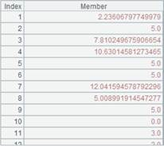 |
||
|
11 |
=file("D://Department5.txt").cursor@t(;1:2) |
=A11.fetch() |
With Fi and s omitted, the function separates the cursor into 2 segments and retrieves the first one |
||
|
12 |
=file("D:// EMPLOYEE. btx").cursor@b(GENDER;1:2) |
=A12.fetch() |
Retrieve the GENDER field of the bin file, EMPLOYEE.btx(a segmented binary file) exported through f.export@z(); by default the exported binary file includes field names . |
||
|
13 |
=file("D://EMPLOYEE.btx").cursor@b(;1:2) |
=A13.fetch() |
Retrieve the segmented binary file, EMPLOYEE1.btx, exported by f.export@b(), divide the file contents into 2 parts, and get the first part |
||
|
14 |
=file("D://Department.txt").cursor@ts() |
= A14.fetch() |
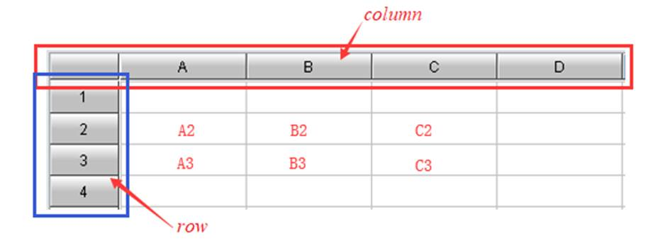 Won¡¯t split fields, the cursor contains a table sequence consisting of a single string field |
||
|
15 |
=file("D://StuName.txt").cursor@i() |
=A15.fetch() |
StuName.txt is a file containing only one field, so the content of the cursor is a sequence |
||
|
16 |
=file("D://EMPLOYEE1.txt").cursor@tc() |
=A16.fetch() |
|
||
|
17 |
=file("D://Department3.txt").cursor@e(EID) |
=A17.fetch() |
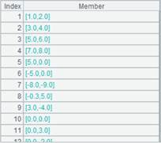 Return null since EID field can¡¯t be found in Department3.txt; without @e option, error will be reported, saying EID: field is not found |
||
|
18 |
=file("D://Department2.txt").cursor@tq(;,"|") |
=A18.fetch() |
Below is Department2.txt: 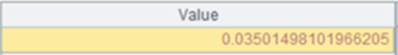 B19¡¯s result: 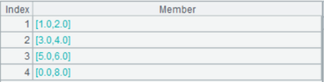 |
||
|
19 |
=file("D://Department.txt").cursor@tm(DEPT:string,MANAGER:int;3,"/") |
|
The cursor is devided into 3 segments and the result of A19 is returned as a multicursor |
||
|
20 |
=file("D://Sale1.txt").cursor(#1,#3) |
=A20.fetch() |
Below is the Sale1.txt file: Below is the result of B20: 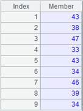 |
||
|
21 |
=file("D:/Dep3.txt").cursor@qo() |
=A21.fetch() |
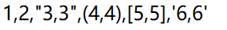 With @o option, two double quotation marks are treated as one and return the result as follows: 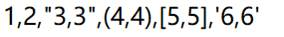 |
||
|
22 |
=file("D:/Dep1.txt").cursor@k() |
=A22.fetch() |
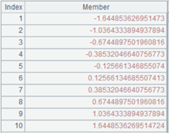 Retain the whitespace characters on both sides of the data item
|
||
|
23 |
=file("D:/Department1.txt").cursor@t(id:int,name;,"|") |
=A23.fetch() |
Return id and name fields of Department1.txt
|
||
|
24 |
=file("D:/Department1.txt").cursor@td(id:int,name;,"|") |
=A24.fetch() |
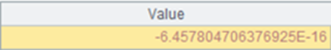 Delete a record containing unmatching data types; rows where id value is a are deleted |
||
|
25 |
=file("D:/Department1.txt").cursor@tv(id:int,name;,"|") |
=A25.fetch() |
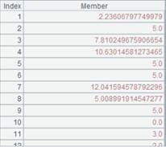 Verify data type matching, and, and if error reports, throw an exception, terminate the execution and output the content of the problem record; data type doesn¡¯t match with rows where id value is a
|
||
|
26 |
=file("D:/Dep2.txt").cursor@tdn(id:int,name,surname;,"|") |
=A26.fetch() |
Here¡¯s
the file Dep2.txt: Ignore row 6 and row 8 because the number of columns don¡¯t match that in row 1 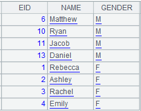 |
||
|
27 |
=file("D:/Desktop/DemoData/txt/City.txt").cursor@w() |
=A27.fetch() |
Use @w option to read each row as a sequence and return a cursor of sequence whose members are sequences 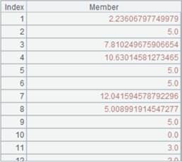 |
||
|
28 |
=file("D://t1.txt").cursor@c() |
=A28.fetch() |
Below is t1.txt: 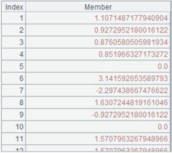 With @c option, use the comma as the default separator and return result as follows: 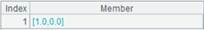 |
||
|
29 |
=file("D://t1.txt").cursor@cp() |
=A29.fetch() |
With @p option, parentheses and quotation marks matching will be handled during parsing
|
||
|
30 |
=file("D://t1.txt").cursor@cpa() |
=A30.fetch() |
With @a option, single quotes are treated as quotes 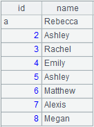 |
||
|
31 |
=file("D://t2.txt").cursor@l() |
=A31.fetch() |
Below is t2.txt: 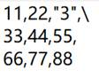 With @1 option, allow line continuation when there is an escape character at the end of the line 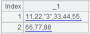 |
||
|
32 |
=file("D://t3.txt").cursor@f() |
=A32.fetch() |
With @f option, just splt the file as a string using the separator 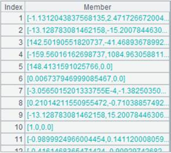 |
||


Related functions: